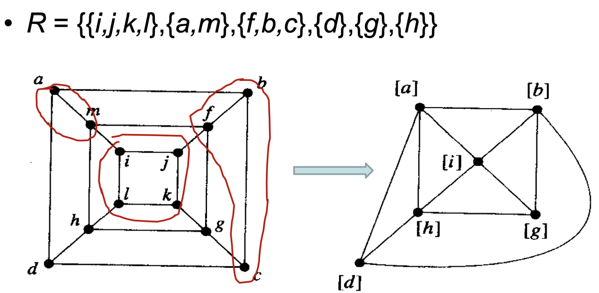
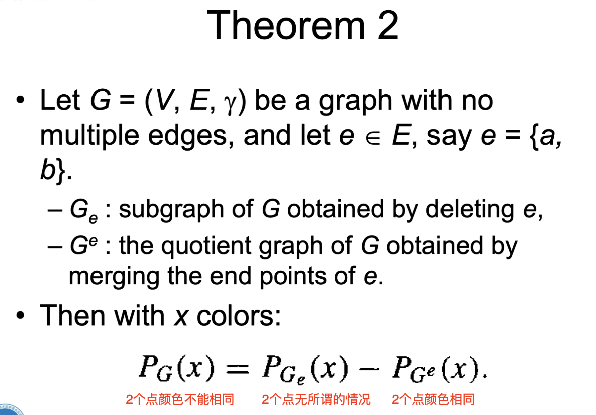
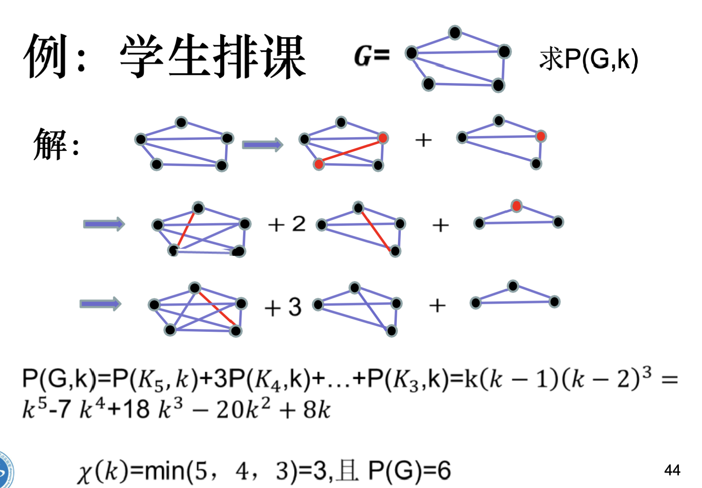
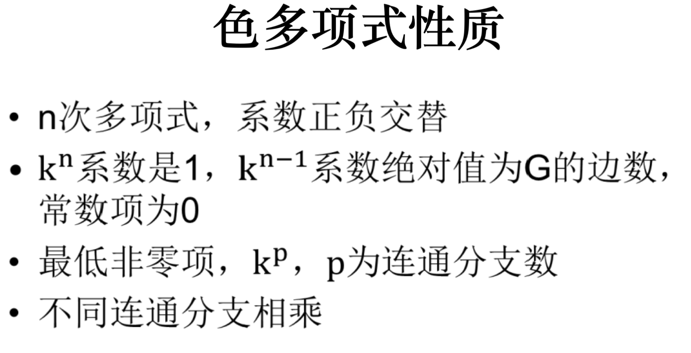

相关定义概述
- \(\chi (G)\)：图的着色数，the chromatic number of G；
- 有点着色，边着色，面着色几种类型；
- \(P_G(k)\)：色多项式，表示图\(G\)用\(k\)种颜色染色的方法数；
常见图的点着色数
零图（无边只有顶点）：1；
完全图\(K_n\)：n；
非零二部图：2；
定理：简单图的点着色数小于等于最大度数 + 1；
非连通图的着色
如果\(G\)为非连通图，那么它的色多项式等于它的所有连通分量的乘积；
商图
把图的顶点按照某种等价类规则划分，直观上就是把两个点捏在一起；
构建色多项式
法一、尝试通过删边得到好求的色多项式

法二、韦尔奇鲍威尔法
- 将顶点按照度数递减排序；
- 用第一种颜色对度数最大的顶点以及和该点不相邻的所有顶点进行染色；
- 对剩余顶点重复上述步骤；
法三、递推构建色多项式

色多项式性质
